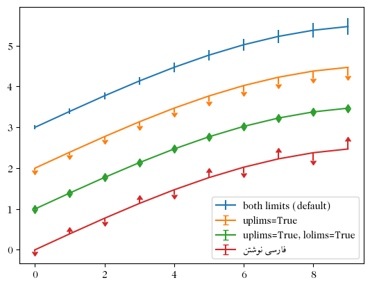

import numpy as np
a = np.arange(15).reshape(3, 5)
aarray([[ 0, 1, 2, 3, 4],
[ 5, 6, 7, 8, 9],
[10, 11, 12, 13, 14]])import numpy as np
a = np.arange(15).reshape(3, 5)
aarray([[ 0, 1, 2, 3, 4],
[ 5, 6, 7, 8, 9],
[10, 11, 12, 13, 14]])
Unable to display output for mime type(s): application/vnd.plotly.v1+jsonو این تست در سمت چپ نوشته شده است این یکی از مواهب خطوط بلند است که ممکن میشود در دو گوشه یک دایره به هم برسند و از یکدیگر بگذرند. اگر از یکدیگر بگذرند، یعنی از یکدیگر گذشتهاند و اگر از یکدیگر گذشته باشند.
حال باید یدید که با چنین متنی چه میکن؟؟
فرضیههای فصل اول
فصل دوم این پژوهش به شناسایی و تحلیل اهداف و انگیزههای نیروی انسانی موجود در بخش اقتصاد دیجیتال در استان تهران با استفاده از روش پیمایش جمعیتی نمونه از شاغلین موجود در بخش اقتصاد دیجیتال استان تهران اختصاص دارد. بنابراین در وهله اول باید راهی یافت تا بتوان اهداف و انگیزههای نیروی انسانی بخش اقتصاد دیجیتال را از مهاجرت از سازمان با آن سنجید و پس از یافتن این راه، به سراغ جمعیتی نمونه از شاغلان این حوزه رفت.
در ابتدا و پیش از طراحی پرسشنامه، در پی آن برآمدیم تا بفهمیم منابع انسانی شرکتها زمانی که نیرویی از آن شرکت میرود معمولا چه میپرسند. مسالهای که توجه ما را به خود جلب کرد این بود که جستجوی در منابع نشانمان داد عمده پژوهشهای صورت گرفته روی موضوع ترک سازمان، در حوزه منابع انسانی سازمانهاست و جامعهشناسان پرسشنامه استانداردی برای آن ندارند. همین طور به واسطه ورود انسانشناسان به استارتآپها و در دست گرفتن فرایندهای طراحی تجربه کاربری، بخشهای گوناگون منابع انسانی سازمانها نیز از رویکردهای انسانشناسانه اثر پذیرفتهاند و در هنگام خروج افراد از سازمان، به جای پرسشنامه خروج استاندارد، مصاحبه خروج دارند. به عبارت دیگر، اغلب توصیههایی که به منابع انسانی سازمانها میشد که چه و چطور بپرسند رویکردی کیفی داشتند و به جای این که پرسشنامهای آماده پیشنهاد دهند که در اختیار افراد قرار گیرد تا پر کنند و بخش منابع انسانی را از کم و کاستیها باخبر سازند، بیشتر بر گفتگو و مصاحبه تاکید داشتند و پرسشهای کلی پیشنهاد میدادند. از این رو، متوجه شدیم که بر خلاف تصور قبلی ما، رویکردهای پژوهشهای کیفی به واسطه حضور انسانشناسان و جامعهشناسان در بخشهای طراحی کاربری شرکتهای خارجی و گسترش حیطه نفوذ و اثربخشی آنان به دیگر بخشهایی که با گروههای انسانی سر و کار دارند، کم کم جای رویکردهای کیفی را در شرکتهای فناورانه باز کرده است.
چنین شد که به جای مبنا قرار دادن پرسشنامهای از پیش تعیینشده، خود دست به کار طراحی پرسشنامهای بر اساس نیاز پروژه و نتایج برآمده از فاز پیشین شدیم.
پرسشنامه ۹ بخش دارد. بخش اول پرسشهایی هستند که به اطلاعات زمینهای میپردازند. بخشهای دوم تا هشتم درباره محیط و شرایط کار هستند و تلاش دارند تصویری از برداشت فرد از وضعیت خود در شرکت ترسیم کنند. بخش نهم به مساله ترک شرکت و مهاجرت میپردازد. ۵۶ پرسش از مشارکتکنندگان پرسیده میشود و به طور میانگین پر کردن آن ۶ دقیقه از هر فرد زمان میگیرد.
جدول زیر شمایی کلی از پرسشنامه ارائه میدهد:
| شماره سوال | بخش | موضوع بخش | شماره سوال در بخش | سوال | نوع |
|---|---|---|---|---|---|
| 1 | 1 | اطلاعات زمینهای | 1 | جنسیت شما | چند گزینهای - تک انتخابی |
| 2 | 1 | اطلاعات زمینهای | 2 | سن شما | چند گزینهای - تک انتخابی |
| 3 | 1 | اطلاعات زمینهای | 3 | وضعیت تاهل | چند گزینهای - تک انتخابی |
| 4 | 1 | اطلاعات زمینهای | 4 | سطح تحصیلات | چند گزینهای - تک انتخابی |
| 5 | 1 | اطلاعات زمینهای | 5 | رشته تحصیلی | کوتاه پاسخ |
| 6 | 1 | اطلاعات زمینهای | 6 | دانشگاه محل تحصیل | کوتاه پاسخ |
| 7 | 1 | اطلاعات زمینهای | 7 | سابقه کار شما در حوزه فناوری اطلاعات | چند گزینهای - تک انتخابی |
| 8 | 1 | اطلاعات زمینهای | 8 | مدت زمان فعالیت شما در شرکت فعلی | چند گزینهای - تک انتخابی |
| 9 | 1 | اطلاعات زمینهای | 9 | نوع قراردادتان با شرکت | چند گزینهای - تک انتخابی |
| 10 | 1 | اطلاعات زمینهای | 10 | اصلیترین نقش یا عنوان شغلی فعلی شما | چند گزینهای - تک انتخابی |
| 11 | 1 | اطلاعات زمینهای | 11 | اندازه شرکت | چند گزینهای - تک انتخابی |
| 12 | 2 | رضایت شغلی و تجربه کاری | 1 | از شرح شغل خود راضی هستم | طیفی - لیکرت |
| 13 | 2 | رضایت شغلی و تجربه کاری | 2 | از وظایفی که به من داده میشود راضی هستم | طیفی - لیکرت |
| 14 | 2 | رضایت شغلی و تجربه کاری | 3 | احساس میکنم شغل من با مهارتها و علاقهمندیهایم همخوانی دارد | طیفی - لیکرت |
| 15 | 2 | رضایت شغلی و تجربه کاری | 4 | در کل، از شغل و موقعیت شغلی فعلی خود رضایت دارم | طیفی - لیکرت |
| 16 | 2 | رضایت شغلی و تجربه کاری | 5 | احساس میکنم که شغلم در موفقیت کلی سازمان تأثیرگذار است | طیفی - لیکرت |
| 17 | 2 | رضایت شغلی و تجربه کاری | 6 | میتوان گفت سازمان قدردان تلاشهای من است | طیفی - لیکرت |
| 18 | 3 | تعادل کار و زندگی | 1 | زمان کاری من مناسب است و به من اجازه میدهد بین کار و زندگی تعادل برقرار کنم | طیفی - لیکرت |
| 19 | 3 | تعادل کار و زندگی | 2 | شرکت امکان دورکاری برای من فراهم میکند | طیفی - لیکرت |
| 20 | 3 | تعادل کار و زندگی | 3 | شرکت به سلامت جسمی کارکنان اهمیت میدهد | طیفی - لیکرت |
| 21 | 3 | تعادل کار و زندگی | 4 | شرکت به سلامت روانی کارکنان اهمیت میدهد | طیفی - لیکرت |
| 22 | 3 | تعادل کار و زندگی | 5 | شرایط کار در این شرکت امکان ایفای دیگر نقشها و مسئولیتهای کارکنان در زندگی (مانند والد بودن، همسر بودن، مراقبت از اعضای خانواده و …) را فراهم میکند | طیفی - لیکرت |
| 23 | 3 | تعادل کار و زندگی | 6 | از سیاستها و برنامههای شرکت برای حفظ تعادل کار و زندگی رضایت دارم | طیفی - لیکرت |
| 24 | 4 | حقوق و مزایا | 1 | از میزان حقوق و مزایای دریافتی خود رضایت دارم | طیفی - لیکرت |
| 25 | 4 | حقوق و مزایا | 2 | حقوق من در این شرکت در مقایسه با دیگر شرکتها رقابتی است | طیفی - لیکرت |
| 26 | 4 | حقوق و مزایا | 3 | مزایای جانبی شرکت (بیمه، پاداش، مرخصی و …) از کیفیت کافی برخوردار است | طیفی - لیکرت |
| 27 | 4 | حقوق و مزایا | 4 | توزیع دستمزد در سازمان ما عادلانه است | طیفی - لیکرت |
| 28 | 4 | حقوق و مزایا | 5 | حقوق و مزایای من با توجه به میزان کارم منصفانه است | طیفی - لیکرت |
| 29 | 4 | حقوق و مزایا | 6 | حقوق و مزایای من با توجه به اهمیت کارم منصفانه است | طیفی - لیکرت |
| 30 | 5 | فرصتهای رشد و آموزش | 1 | مسیرهای روشن و مشخصی برای ارتقاء شغلی در سازمان وجود دارد | طیفی - لیکرت |
| 31 | 5 | فرصتهای رشد و آموزش | 2 | من از برنامههای آموزشی و توسعه مهارتها در شرکت بهرهمند شدهام | طیفی - لیکرت |
| 32 | 5 | فرصتهای رشد و آموزش | 3 | فرصتهای کافی برای یادگیری و رشد حرفهای در شرکت وجود دارد | طیفی - لیکرت |
| 33 | 5 | فرصتهای رشد و آموزش | 4 | امکان یادگیری از همکاران و مدیران در شرکت وجود دارد. | طیفی - لیکرت |
| 34 | 6 | فرهنگ سازمانی و محیط کار | 1 | از فرهنگ سازمانی و ارزشهای شرکت رضایت دارم | طیفی - لیکرت |
| 35 | 6 | فرهنگ سازمانی و محیط کار | 2 | شرکت مرا همانطور که هستم میپذیرد | طیفی - لیکرت |
| 36 | 6 | فرهنگ سازمانی و محیط کار | 3 | محیط کار من صمیمی و مشارکتمحور است | طیفی - لیکرت |
| 37 | 6 | فرهنگ سازمانی و محیط کار | 4 | در این سازمان امنیت شغلی دارم | طیفی - لیکرت |
| 38 | 6 | فرهنگ سازمانی و محیط کار | 5 | سازوکار کارآمدی برای کنترل رفتارهای ناسالم سازمانی (رقابت ناسالم، خبرچینی، تخریب وجهه همکاران و…) در سازمان ما وجود دارد | طیفی - لیکرت |
| 39 | 6 | فرهنگ سازمانی و محیط کار | 6 | سازوکار کارآمدی برای کنترل رفتارهای ناسالم بین فردی (انواع آزار محیط کار از قبیل آزار جنسی یا سوء استفاده از قدرت) در سازمان ما وجود دارد | طیفی - لیکرت |
| 40 | 7 | مدیریت و رهبری | 1 | از حمایت و راهنماییهای مدیر مستقیم خود رضایت دارم | طیفی - لیکرت |
| 41 | 7 | مدیریت و رهبری | 2 | اعتبار و تشویق کاری که انجام میدهم به خودم (نه به مدیر مافوقم) میرسد | طیفی - لیکرت |
| 42 | 7 | مدیریت و رهبری | 3 | مدیران بازخوردهای من را میشنوند و به آنها عمل میکنند | طیفی - لیکرت |
| 43 | 7 | مدیریت و رهبری | 4 | تصمیمگیریهای مدیران برای من شفاف و منطقی است | طیفی - لیکرت |
| 44 | 8 | دیدگاههای کلان نسبت به سازمان | 1 | شرکت ما در حوزه IT پیشرو است | طیفی - لیکرت |
| 45 | 8 | دیدگاههای کلان نسبت به سازمان | 2 | شرکت نوآوریها و فناوریهای جدید را به خوبی پیادهسازی میکند | طیفی - لیکرت |
| 46 | 8 | دیدگاههای کلان نسبت به سازمان | 3 | استراتژیها و اهداف کلی شرکت برای من روشن هستند | طیفی - لیکرت |
| 47 | 8 | دیدگاههای کلان نسبت به سازمان | 4 | شرکت در مواجهه با تغییرات فناوری و نیازهای بازار انعطافپذیری مطلوبی دارد | طیفی - لیکرت |
| 48 | 8 | دیدگاههای کلان نسبت به سازمان | 5 | منابع و بودجه شرکت به درستی برای دستیابی به اهداف استراتژیک تخصیص داده میشوند | طیفی - لیکرت |
| 49 | 9 | تصمیم به ماندن یا ترک شرکت | 1 | در سال گذشته پیشنهاد شغلی دیگری داشتهاید؟ | چند گزینهای - تک پاسخ |
| 50 | 9 | تصمیم به ماندن یا ترک شرکت | 2 | اگر از این شرکت بروید قصد دارید: | چند گزینهای - تک پاسخ |
| 51 | 9 | تصمیم به ماندن یا ترک شرکت | 3 | آیا قصد دارید تا دو سال آینده همچنان در این شرکت بمانید | چند گزینهای - تک پاسخ |
| 52 | 9 | تصمیم به ماندن یا ترک شرکت | 4 | اگر قصد ماندن دارید کدامیک از عوامل زیر شما را به ماندن ترغیب میکند؟ | اولویتبندی |
| 53 | 9 | تصمیم به ماندن یا ترک شرکت | 5 | اگر قصد رفتن از سازمان را دارید کدامیک از عوامل زیر بیشترین تأثیر را بر تصمیم شما دارد؟ | اولویتبندی |
| 54 | 9 | تصمیم به ماندن یا ترک شرکت | 6 | آیا طی دو سال آینده قصد مهاجرت دارید؟ | چند گزینهای - تک پاسخ |
| 55 | 9 | تصمیم به ماندن یا ترک شرکت | 7 | اگر قصد مهاجرت دارید کدام یک از عوامل زیر بیشترین تأثیر را در تصمیم شما دارد؟ | اولویتبندی |
| 56 | 9 | تصمیم به ماندن یا ترک شرکت | 8 | لطفاً حوزه فعالیت و نام شرکتی را که در آن شاغلید بنویسید | کوتاه پاسخ |
| شماره سوال | بخش | موضوع بخش | شماره سوال در بخش | سوال | نوع |
|---|---|---|---|---|---|
| 1 | 1 | اطلاعات زمینهای | 1 | جنسیت شما | چند گزینهای - تک انتخابی |
| 2 | 1 | اطلاعات زمینهای | 2 | سن شما | چند گزینهای - تک انتخابی |
| 3 | 1 | اطلاعات زمینهای | 3 | وضعیت تاهل | چند گزینهای - تک انتخابی |
| 4 | 1 | اطلاعات زمینهای | 4 | سطح تحصیلات | چند گزینهای - تک انتخابی |
| 5 | 1 | اطلاعات زمینهای | 5 | رشته تحصیلی | کوتاه پاسخ |
| 6 | 1 | اطلاعات زمینهای | 6 | دانشگاه محل تحصیل | کوتاه پاسخ |
| 7 | 1 | اطلاعات زمینهای | 7 | سابقه کار شما در حوزه فناوری اطلاعات | چند گزینهای - تک انتخابی |
| 8 | 1 | اطلاعات زمینهای | 8 | مدت زمان فعالیت شما در شرکت فعلی | چند گزینهای - تک انتخابی |
| 9 | 1 | اطلاعات زمینهای | 9 | نوع قراردادتان با شرکت | چند گزینهای - تک انتخابی |
| 10 | 1 | اطلاعات زمینهای | 10 | اصلیترین نقش یا عنوان شغلی فعلی شما | چند گزینهای - تک انتخابی |
| 11 | 1 | اطلاعات زمینهای | 11 | اندازه شرکت | چند گزینهای - تک انتخابی |
| 12 | 2 | رضایت شغلی و تجربه کاری | 1 | از شرح شغل خود راضی هستم | طیفی - لیکرت |
| 13 | 2 | رضایت شغلی و تجربه کاری | 2 | از وظایفی که به من داده میشود راضی هستم | طیفی - لیکرت |
| 14 | 2 | رضایت شغلی و تجربه کاری | 3 | احساس میکنم شغل من با مهارتها و علاقهمندیهایم همخوانی دارد | طیفی - لیکرت |
| 15 | 2 | رضایت شغلی و تجربه کاری | 4 | در کل، از شغل و موقعیت شغلی فعلی خود رضایت دارم | طیفی - لیکرت |
| 16 | 2 | رضایت شغلی و تجربه کاری | 5 | احساس میکنم که شغلم در موفقیت کلی سازمان تأثیرگذار است | طیفی - لیکرت |
| 17 | 2 | رضایت شغلی و تجربه کاری | 6 | میتوان گفت سازمان قدردان تلاشهای من است | طیفی - لیکرت |
| 18 | 3 | تعادل کار و زندگی | 1 | زمان کاری من مناسب است و به من اجازه میدهد بین کار و زندگی تعادل برقرار کنم | طیفی - لیکرت |
| 19 | 3 | تعادل کار و زندگی | 2 | شرکت امکان دورکاری برای من فراهم میکند | طیفی - لیکرت |
| 20 | 3 | تعادل کار و زندگی | 3 | شرکت به سلامت جسمی کارکنان اهمیت میدهد | طیفی - لیکرت |
| 21 | 3 | تعادل کار و زندگی | 4 | شرکت به سلامت روانی کارکنان اهمیت میدهد | طیفی - لیکرت |
| 22 | 3 | تعادل کار و زندگی | 5 | شرایط کار در این شرکت امکان ایفای دیگر نقشها و مسئولیتهای کارکنان در زندگی (مانند والد بودن، همسر بودن، مراقبت از اعضای خانواده و ...) را فراهم میکند | طیفی - لیکرت |
| 23 | 3 | تعادل کار و زندگی | 6 | از سیاستها و برنامههای شرکت برای حفظ تعادل کار و زندگی رضایت دارم | طیفی - لیکرت |
| 24 | 4 | حقوق و مزایا | 1 | از میزان حقوق و مزایای دریافتی خود رضایت دارم | طیفی - لیکرت |
| 25 | 4 | حقوق و مزایا | 2 | حقوق من در این شرکت در مقایسه با دیگر شرکتها رقابتی است | طیفی - لیکرت |
| 26 | 4 | حقوق و مزایا | 3 | مزایای جانبی شرکت (بیمه، پاداش، مرخصی و ...) از کیفیت کافی برخوردار است | طیفی - لیکرت |
| 27 | 4 | حقوق و مزایا | 4 | توزیع دستمزد در سازمان ما عادلانه است | طیفی - لیکرت |
| 28 | 4 | حقوق و مزایا | 5 | حقوق و مزایای من با توجه به میزان کارم منصفانه است | طیفی - لیکرت |
| 29 | 4 | حقوق و مزایا | 6 | حقوق و مزایای من با توجه به اهمیت کارم منصفانه است | طیفی - لیکرت |
| 30 | 5 | فرصتهای رشد و آموزش | 1 | مسیرهای روشن و مشخصی برای ارتقاء شغلی در سازمان وجود دارد | طیفی - لیکرت |
| 31 | 5 | فرصتهای رشد و آموزش | 2 | من از برنامههای آموزشی و توسعه مهارتها در شرکت بهرهمند شدهام | طیفی - لیکرت |
| 32 | 5 | فرصتهای رشد و آموزش | 3 | فرصتهای کافی برای یادگیری و رشد حرفهای در شرکت وجود دارد | طیفی - لیکرت |
| 33 | 5 | فرصتهای رشد و آموزش | 4 | امکان یادگیری از همکاران و مدیران در شرکت وجود دارد. | طیفی - لیکرت |
| 34 | 6 | فرهنگ سازمانی و محیط کار | 1 | از فرهنگ سازمانی و ارزشهای شرکت رضایت دارم | طیفی - لیکرت |
| 35 | 6 | فرهنگ سازمانی و محیط کار | 2 | شرکت مرا همانطور که هستم میپذیرد | طیفی - لیکرت |
| 36 | 6 | فرهنگ سازمانی و محیط کار | 3 | محیط کار من صمیمی و مشارکتمحور است | طیفی - لیکرت |
| 37 | 6 | فرهنگ سازمانی و محیط کار | 4 | در این سازمان امنیت شغلی دارم | طیفی - لیکرت |
| 38 | 6 | فرهنگ سازمانی و محیط کار | 5 | سازوکار کارآمدی برای کنترل رفتارهای ناسالم سازمانی (رقابت ناسالم، خبرچینی، تخریب وجهه همکاران و...) در سازمان ما وجود دارد | طیفی - لیکرت |
| 39 | 6 | فرهنگ سازمانی و محیط کار | 6 | سازوکار کارآمدی برای کنترل رفتارهای ناسالم بین فردی (انواع آزار محیط کار از قبیل آزار جنسی یا سوء استفاده از قدرت) در سازمان ما وجود دارد | طیفی - لیکرت |
| 40 | 7 | مدیریت و رهبری | 1 | از حمایت و راهنماییهای مدیر مستقیم خود رضایت دارم | طیفی - لیکرت |
| 41 | 7 | مدیریت و رهبری | 2 | اعتبار و تشویق کاری که انجام میدهم به خودم (نه به مدیر مافوقم) میرسد | طیفی - لیکرت |
| 42 | 7 | مدیریت و رهبری | 3 | مدیران بازخوردهای من را میشنوند و به آنها عمل میکنند | طیفی - لیکرت |
| 43 | 7 | مدیریت و رهبری | 4 | تصمیمگیریهای مدیران برای من شفاف و منطقی است | طیفی - لیکرت |
| 44 | 8 | دیدگاههای کلان نسبت به سازمان | 1 | شرکت ما در حوزه IT پیشرو است | طیفی - لیکرت |
| 45 | 8 | دیدگاههای کلان نسبت به سازمان | 2 | شرکت نوآوریها و فناوریهای جدید را به خوبی پیادهسازی میکند | طیفی - لیکرت |
| 46 | 8 | دیدگاههای کلان نسبت به سازمان | 3 | استراتژیها و اهداف کلی شرکت برای من روشن هستند | طیفی - لیکرت |
| 47 | 8 | دیدگاههای کلان نسبت به سازمان | 4 | شرکت در مواجهه با تغییرات فناوری و نیازهای بازار انعطافپذیری مطلوبی دارد | طیفی - لیکرت |
| 48 | 8 | دیدگاههای کلان نسبت به سازمان | 5 | منابع و بودجه شرکت به درستی برای دستیابی به اهداف استراتژیک تخصیص داده میشوند | طیفی - لیکرت |
| 49 | 9 | تصمیم به ماندن یا ترک شرکت | 1 | در سال گذشته پیشنهاد شغلی دیگری داشتهاید؟ | چند گزینهای - تک پاسخ |
| 50 | 9 | تصمیم به ماندن یا ترک شرکت | 2 | اگر از این شرکت بروید قصد دارید: | چند گزینهای - تک پاسخ |
| 51 | 9 | تصمیم به ماندن یا ترک شرکت | 3 | آیا قصد دارید تا دو سال آینده همچنان در این شرکت بمانید | چند گزینهای - تک پاسخ |
| 52 | 9 | تصمیم به ماندن یا ترک شرکت | 4 | اگر قصد ماندن دارید کدامیک از عوامل زیر شما را به ماندن ترغیب میکند؟ | اولویتبندی |
| 53 | 9 | تصمیم به ماندن یا ترک شرکت | 5 | اگر قصد رفتن از سازمان را دارید کدامیک از عوامل زیر بیشترین تأثیر را بر تصمیم شما دارد؟ | اولویتبندی |
| 54 | 9 | تصمیم به ماندن یا ترک شرکت | 6 | آیا طی دو سال آینده قصد مهاجرت دارید؟ | چند گزینهای - تک پاسخ |
| 55 | 9 | تصمیم به ماندن یا ترک شرکت | 7 | اگر قصد مهاجرت دارید کدام یک از عوامل زیر بیشترین تأثیر را در تصمیم شما دارد؟ | اولویتبندی |
| 56 | 9 | تصمیم به ماندن یا ترک شرکت | 8 | لطفاً حوزه فعالیت و نام شرکتی را که در آن شاغلید بنویسید | کوتاه پاسخ |
پرسشنامههای استاندارد یا آنهایی که از روی پرسشنامههای استاندارد تهیه میشوند، چون بارها و بارها از نظر متخصصان گذشتهاند و همین طور در سنجشهای مکرر، نتایجی تقریبا همسان داشتهاند، مورد اعتماد جامعه علمی هستند. این دو ویژگی، یعنی روایی و پایایی، باید برای پرسشنامههای تازه طراحیشده مورد سنجش قرار گیرند تا بتوان به نتایج برآمده از آنها اعتنا داشت.
این دو شرط روایی و پایایی، در اساس توافقهای جامعه علمی بر سر ابزار اندازهگیری هستند. پرسشنامه تازه ادعا دارد که میتواند متغیرهایی را اندازه بگیرد. حال متخصصان آن حوزه باید توافق کنند که آیا چنین پرسشنامهای اساسا میتواند منجر به چنان سنجشی شود یا نه. پس از این که ادعای روایی توانست توافق متخصصان را جلب کند، باید دید که خود این ابزار آیا با تکرار استفاده نتایجی همسان ارائه میدهد یا نتایج چنان با هم ناهمخوان هستند که جایی از کار میلنگد؟
برای سنجش روایی پرسشنامه آن را در اختیار ۵ متخصص قرار دادیم. ۲ نفر از آنان متخصص حوزه منابع انسانی بودند. ۲ نفر دیگر دکتری جامعهشناسی داشتند و در حوزههای گوناگون به پژوهشهای کمی میپرداختند. نفر پنجم استاد برجسته دانشگاه بود که علاوه بر تسلط بر انواع روشهای کمی و کیفی و زیر و بمهای هر کدام، شناخت عمیقی از شیوههای گوناگون پژوهش بر جنبههای اقتصادی جوامع کوچک و متوسط مقیاس دارد.
یکی از متخصصان پیشنهاد اضافه کردن یک پرسش را مطرح کرد که به پرسشنامه اضافه شد و دوباره در اختیار آنان قرار گرفت. به جز این، اصلاح دیگری بر پرسشنامه اولیه اعمال نشد و هر پنج متخصص بر اعتبار/روایی پرسشنامه اتفاق نظر داشتند. از این رو آماده سنجش پایایی آن با آزمون اولیه شدیم.
آزمون اولیه با مشارکت ۱۰ نفر از جامعه هدف (کارمندان شرکتهای فناوری اطلاعات استان تهران) که به طور تصادفی انتخاب نشده بودند برگزار شد. لینک پرسشنامه آنلاین را برایشان فرستادیم و ظرف ۹ روز پاسخها را جمع کردیم. تحلیل نتایج نشان میداد که نتایج متفاوت ولی همسان هستند، یعنی پرسشها به شکلهای گوناگونی در افراد مختلف تفسیر نمیشوند و دامنه تغییرات پاسخها به حدی نیست که نشان دهد ایرادی ساختاری یا مفهومی در پرسشنامه وجود دارد.
از این جا نیز پی بردیم که نتیجه کار، طراحی پرشنامهای معتبر شده است که میتواند ما را در فهم بهتر اهداف و انگیزههای جامعه هدف یاری دهد.
در کنار طراحی پرسشنامه، لازم بود بدانیم شاغلان در حوزه اقتصاد دیجیتال کجا کار میکنند تا بتوانیم از میان آنان جمعیتی نمونه بگیریم و پرسشنامه را برایشان بفرستیم تا نتایج تحلیلهای برآمده از آن قابل تعمیم باشد. مشکل از همان ابتدا شروع شد. آمار دقیقی از تعداد شاغلان حوزه اقتصاد دیجیتال وجود ندارد. یعنی مثلا مرکز آمار ایران یا اتاق بازرگانی، صنایع و معادن و کشاورزی استان تهران یا نظام صنفی رایانهای استان تهران آمار درست و قابل اتکایی از تعداد شاغلان این حوزه ندارند. آمارهای برخی شرکتها مانند گزارش نظرسنجی جامعه برنامهنویسان ایران ۱۴۰۳ که توسط کوئرا منتشر شدهاند آنقدر از نظر علمی ایراد دارند که نه تنها قابل اعتماد نیستند، که بیمعنا، بیارزش و گمراهکننده هستند. خود این مساله، علی رغم این که سالها طرحهای مختلفی برای آمارگیری از شرکتهای حوزه فناوری اطلاعات وجود داشته و با موفقیت اجرا شده است (مانند طرحهای شورای عالی انفورماتیک کشور و تکفا)، جای بررسی علمی و دقیقتر دارد که باید در جای دیگری بررسی گردد. راهی که ما در پیش گرفتیم استخراج داده از شرکتهای کاریابی آنلاین بود؛ به این صورت که ابتدا شرکتهایی را بیابیم که در این سایتها ثبت شدهاند و در تهران هستند. سپس بر اساس تعداد کارمندانی که خود اعلام کردهاند، تخمینی از جمعیت شاغلان اقتصاد دیجیتال به دست آوریم، جمعیت نمونه را انتخاب کنیم و به سراغشان رویم. به نظرمان رسید سایت ایران تلنت برای این کار مناسب باشد.
با برنامهای پایتونی دادههای ۹۵۵ شرکت را از سایت ایران تلنت استخراج کردیم. از میان آنان ۷۱۳ شرکت در تهران بودند. پراکندگی این شرکتها را بر اساس دستهبندی تعداد کارمندان، که در سایت ارائه شده است، در جدول زیر میبینید:
| تعداد کارمند | تعداد شرکت | درصد |
|---|---|---|
| 1-9 | 59 | 8.27 |
| 10-49 | 340 | 47.69 |
| 50-99 | 158 | 22.16 |
| 100-499 | 121 | 16.97 |
| 500 به بالا | 35 | 4.91 |
بر اساس تعداد شرکتها و بازهای که برای تعداد کارمندانشان ذکر کردهاند،میتوان تخمینی از جمعیت شاغلان زد. بنابراین بیشترین تعداد شاغلان حوزه اقتصاد دیجیتال در استان تهران، طبق دادههای ایران تلنت، ۱۶۳ هزار است. همین طور تنها ۳۵ شرکت در تهران هستند که بیش از ۵۰۰ کارمند دارند. به نظر میآید که این تخمین درست نباشد.
| تخمین جمعیت | ||||||
| Min | Mid | Max | ||||
| جمعیت | 41,077 | 93,645 | 163,212 | |||
| دستهبندی/شرکتها | تعداد کارمند | تعداد کل کارمندان | تعداد کارمند | تعداد کل کارمندان | تعداد کارمند | تعداد کل کارمندان |
| 1-9 | 3 | 177 | 5 | 295 | 9 | 531 |
| 10-49 | 10 | 3,400 | 30 | 10,200 | 49 | 16,660 |
| 50-99 | 50 | 7,900 | 75 | 11,850 | 99 | 15,642 |
| 100-499 | 100 | 12,100 | 300 | 36,300 | 499 | 60,379 |
| 500 به بالا | 500 | 17,500 | 1000 | 35,000 | 2000 | 70,000 |
مشکل این جاست که تعداد شرکتهای فناوری اطلاعات در تهران علیالاصول بیش از ۷۱۳ تاست. بنابراین بایستی فهرست را از جایی دیگر پیدا کرد.
نامهنگاریهای اسفند ماه با اتاق بازرگانی، صنایع، معادن و کشاورزی تهران برای دستیافتن به فهرستی از شرکتهای فعال حوزه فناوری اطلاعات راه به جایی نبرد. تا نیمه فروردین ماه نیز این اتاق گرفتار تعطیلات سال نو بود. در نهایت، مجاهدت در راه علم به ثمر نشست و فهرستی شامل ۴۴ شرکت دانشبنیان برایمان ارسال شد که هر چند فهرستی جالب بود اما در وهله اول ارتباطی با حوزه فناوری اطلاعات نداشت (۱۱ مورد از شرکتها در صنایع غیرمرتبط بودند، یعنی ۲۵ درصد داده نامرتبط). در وهله دوم بر ما پوشیده بود که این فهرست چگونه انتخاب شده است و این شرکتها بر چه مبنایی به عنوان جمعیت نمونه (اگر به عنوان جمعیت نمونه) به ما معرفی شدهاند. در وهله سوم، این تعداد شرکت به لحاظ آماری ارزشی ندارد زیرا ما در لحظه دریافت این فهرست، با فهرستی که از وبسایت جابویژن ساخته بودیم کار را پیش برده بودیم که ۱۹۰ برابر این فهرست شرکت داشت و جمعیتی حدود ۵۰۰ هزار نفر در اختیارمان میگذاشت. بنابراین این فهرست را کنار گذاشتیم.
وبسایت جابویژن از دادههایی که نمایش میدهد به شدت محافظت میکند و تلاش ما برای استخراج دادههای مورد نیازمان از آن، بیشتر شبیه تلاش تیمهای فناوری اطلاعات بود تا تیمی متشکل از جامعهشناسان. به هر حال دادههایی را که می خواستیم به دست آوردیم و جابویژنیها را با ترافیک سایتشان تنها گذاشتیم تا گزارش سالانهشان را تهیه کنند. فهرست اولیه شامل ۱۰۷۱۲ شرکت بود که در نتیجه جستجوی خود وبسایت هم ظاهر میشوند. اما بررسیهای ما نشان داد که تنها ۸۴۵۴ از آنها یک بار آمدهاند و باقی ۲۲۵۸ تا، بیش از یک بار در فهرست نتایج جابویژن و آمارهایش تکرار شدهاند. به عبارت دیگر، تعداد نتایجی که در جستجوی وبسایت نشان داده میشود، ۲۱ درصد خطا دارد و این خطا نه از نمایش در سایت، که از خطای ذخیرهسازی در سمت سرور سایت است. حداقل در مورد استان تهران ۲۱ درصد شرکتها تکراری هستند.
با حذف این شرکتهای تکراری، دانشگاهها، شرکتهای دولتی، وزارتخانهها، سازمانهای دولتی، ارگانهای دولتی، ستادها، شهرداریها، چون مخاطب کارفرمای پروژه نبودند، در نهایت کار را با ۸۳۶۱ شرکت ادامه دادیم.
| تعداد کارمندان | تعداد | درصد |
|---|---|---|
| زیر 10 نفر | 3300 | 39.469 |
| 11 تا 50 نفر | 3886 | 46.478 |
| 51 تا 200 نفر | 919 | 10.992 |
| 201 تا 500 نفر | 162 | 1.938 |
| 501 تا 1000 نفر | 55 | 0.658 |
| 1001 تا 5000 نفر | 30 | 0.359 |
| بیش از 5000 نفر | 9 | 0.108 |
| مجموع | 8361 | |
اگر بخواهیم تخمینی از جمعیت شاغلان حوزه فناوری اطلاعات بر اساس این دادهها داشته باشیم، جدولی مانند جدول زیر خواهیم داشت:
| تخمین جمعیت | Min | Mid | Max | |||
|---|---|---|---|---|---|---|
| تعداد کارمندان | یک شرکت | کل | یک شرکت | کل | یک شرکت | کل |
| زیر 10 نفر | 3 | 9,900 | 5 | 16,500 | 10 | 33,000 |
| 11 تا 50 نفر | 11 | 42,746 | 25 | 97,150 | 50 | 194,300 |
| 51 تا 200 نفر | 51 | 46,869 | 125 | 114,875 | 200 | 183,800 |
| 201 تا 500 نفر | 201 | 32,562 | 350 | 56,700 | 500 | 81,000 |
| 501 تا 1000 نفر | 501 | 27,555 | 750 | 41,250 | 1,000 | 55,000 |
| 1001 تا 5000 نفر | 1,001 | 30,030 | 3,000 | 90,000 | 5,000 | 150,000 |
| بیش از 5000 نفر | 5,000 | 45,000 | 7,000 | 63,000 | 10,000 | 90,000 |
| کل | 234,662 | 479,475 | 787,100 | |||
این جدول به ما نشان میدهد که اگر بخواهیم جمعیت را بر حسب کمترین تعداد افراد ذکر شده در دستهبندی حساب کنیم، ۲۳۴ هزار نفر خواهند بود. اگر بر حسب بیشترین مقدار محاسبه کنیم، با ۷۸۷ هزار نفر سر و کار خواهیم داشت. اما از آن جایی که شاهدی بر این مدعا نداریم که تمامی شرکتهایی که با آنها روبرو خواهیم بود، در دو سط این طیفها قرار خواهند گرفت، تخمین جمعیت را بر اساس میانه این بازههای جمعیتی محاسبه میکنیم و جمعیت شاغلان حوزه فناوری اطلاعات در استان تهران را ۴۷۹۴۷۵ نفر شاغل در ۸۳۶۱ شرکت در نظر میگیریم.
حال باید از میان ۴۷۹۴۷۵ نفر شاغلان این حوزه، به طور تصادفی نمونهای انتخاب کرد. حداقل حجم این نمونه، بر اساس فرمول کوکران با خطای ۰.۰۵ درصد، ۳۸۴ نمونه میشود. با توجه به این که ممکن است در پر شدن پرسشنامه مشکلاتی پیشبینی نشده رخ دهد، تصمیم گرفتیم ۵۰۰ پرسشنامه پر شود تا بتوان حداقل ۴۰۰ پرسشنامه قابل قبول داشت.
مساله این است که این پرسشنامهها بین چه کسانی پخش شود. یعنی افرادی را که باید پرسشنامه پر کنند چگونه بیابیم؟ با توجه به این که شاغلان در شرکتها برای پژوهش ما مهم هستند، این افراد را باید در شرکتها یافت. پس راه دسترسی به آنان از طریق شرکتهایشان است. حال مساله از یافتن افراد به یافتن شرکتها تغییر میکند.
میتوان شرکتها را به صورت تصادفی انتخاب کرد. اما با توجه به این که شرکتهای زیر ۵۰ نفر بخش بزرگی از شرکتها را شامل میشوند، با احتمال بسیار بیشتری انتخاب میگردند و افراد شاغل در آنها سهم بیشتری در میان پاسخدهندگان خواهند داشت. بنابراین اریب ناپسندی در کار ایجاد خواهد شد. بنابراین انتخاب چنین روشی برای نمونهگیری روا نیست و باید سراغ نمونهگیری طبقهبندی رفت.
در نمونهگیری طبقهبندی باید به دنبال متغیری گشت که نمونه از آن نظر کاملا معرف باشد. حوزه فعالیت میتواند چنین متغیری قلمداد شود. اما اگر شرکتها را بر اساس حوزه فعالیتشان طبقهبندی کنیم، تمام اعضای جمعیت احتمال انتخاب یکسانی نخواهند داشت و احتمال انتخاب از میان شرکتهای پرجمعیتتر، به خاطر جمعیت بیشترشان و سهم بیشتری که در ترکیب جمعیتی هر دسته خواهند داشت، بیشتر خواهد بود.بنابراین شرایط و اهداف و انگیزههای کارکنان شرکتهای بزرگتر بازتاب پررنگتری در تحلیل نهایی خواهد یافت. خود این شرکتها به قدر کافی بر مسایل خودشان متمرکز بودهاند و به اندازه کافی دسترسی به تریبونهای گوناگون دارند که مسایل خود را مطرح سازند. در این پژوهش هم به لحاظ اخلاقی، هم به لحاظ دقت آماری، بهتر است طبقهبندی دیگری اعمال شود.
تعداد کارکنان متغیر دیگری است که میتوان مبنای طبقهبندی باشد. از لحاظ این که مسایل شرکتهای هماندازه متناسب با سهم خودشان در بازار کار بررسی خواهد شد، مشکل نمونهگیری تصادفی را نخواهد داشت و از این لحاظ که گروههای کمجمعیت نیز در دستههای جداگانه قرار خواهند گرفت و مستقل از شرکتهای بزرگ در نمونهگیری نماینده خواهند داشت، مشکل دستهبندی بر اساس حوزه فعالیت را نیز حل کردهایم. در عین حال متغیری است که بر اساس دادههای استخراجشده از جابویژن (با دقتی قابل قبول) به دست آمده است و نیازی به جمعآوری داده دیگری ندارد. پس مبنای دستهبندی را تعداد کارکنان قرار میدهیم و به دنبال دستهبندیهای استانداردی میگردیم که در بازار کار ایران یا جهان مورد قبول باشند.
در ایران تعریف مشخص و واحدی از بنگاههای کوچک و متوسط (SME)وجود ندارد و سازمانها و ارگانهای مختلف از تعاریف متفاوتی استفاده میکنند. بهطور کلی، تعریف این بنگاهها اغلب بر اساس تعداد کارکنان ارائه میشود. سازمانها بسته به نیازهای خود، طبقهبندیهای گوناگونی را لحاظ کردهاند.
وزارت صنعت، معدن و تجارت و وزارت جهاد کشاورزی: بنگاههای کوچک و متوسط را واحدهای صنعتی و خدماتی با کمتر از 50 نفر کارکن تعریف میکنند
مرکز آمار ایران: طبقهبندی کسبوکارها به صورت زیر است:
آییننامه اجرایی گسترش بنگاههای کوچک و زودبازده (1384): بنگاههای تولیدی (کالا و خدمات) با کمتر از 50 نفر کارکن را بنگاه کوچک مینامد
اداره آمار بانک مرکزی: تعریف مشابهی ارائه کرده است که واحدهای با کمتر از 10 نفر کارکن بهعنوان خرد، 10 تا 49 نفر کوچک، 50 تا 99 نفر متوسط و بالای 100 نفر بزرگ دانسته میشوند.
بنگاههای کوچک و متوسط دارای ویژگیهای کیفی متمایزی هستند. برخی از این ویژگیها عبارتند از: ارائه خدمات به مشتریان محلی یا داشتن سهم کوچکی از بازار. مدیریت و مالکیت توسط یک فرد یا گروه کوچک. دریافت کمک محدود از منابع مالی و انجام فعالیت بهطور مستقل. فعالیت در کنار مؤسسات بزرگ و تأمین محصولات برای آنها. تعاریف کیفی باید شامل چند ویژگی بهطور همزمان باشند تا ماهیت SMEها را به درستی نشان دهند. برای مثال، این بنگاهها معمولاً دارای معیارهایی همچون وحدت مالکیت و مدیریت، اندازه کوچکتر نسبت به شاخصهای صنعت مربوطه و محیط کاری محلی هستند.
در ایران، SMEها حدود ۷ تا ۹ درصد تولید ناخالص داخلی (GDP) را تأمین کرده و ۶۰ درصد اشتغال کشور را ایجاد میکنند. بر اساس آمار: ۹۴ درصد واحدهای صنعتی شامل SMEها هستند. این صنایع ۴۳ درصد از مشاغل صنعتی کشور را فراهم میکنند. اقتصاد کشور به شدت تحت تأثیر شرکتهای دولتی و شبهدولتی است که بیش از ۸۰ درصد اقتصاد را کنترل میکنند، بهویژه در حوزههای نفت، گاز و پتروشیمی. این وابستگیها نقش SMEها را در اقتصاد کشور پررنگتر میسازد.
وجود تعاریف مختلف از SMEها نیاز به یک تعریف مشترک را ضروری میسازد. این امر موجب خواهد شد:
اتاق بازرگانی میتواند نقش مهمی در توسعه SMEها ایفا کند. با تدوین یک سند ملی میتوان ظرفیتها و چالشهای این بخش را ارزیابی و تأثیرات اقتصادی، اجتماعی و فرهنگی آنها را در مناطق مختلف کشور تحلیل کرد. نتیجهگیری این سند میتواند برنامهای جامع برای توسعه متوازن و پایدار SMEها بر اساس پتانسیلهای هر منطقه ارائه دهد.
با این اوصاف، نمیتوان تعریفهای نهادهای دیگر را بر دادههایی که جمع آوردهایم اعمال کرد چون هم استانداردی در میانشان وجود ندارد و هم شرکتهای بزرگی را که با آنها نیز سر و کار داریم در بر نمیگیرند. با همان دستهبندی ارائهشده در وبسایت جابویژن طبقهبندی را انجام خواهیم داد؛ با علم به این که دادهها به صورت خوداظهاری در سایت ثبت میشوند و مکانیسمی برای تایید و صحتسنجی آنها وجود ندارد.
با توجه به تعداد پرسشنامههای مورد نیاز، یعنی ۵۰۰ پرسشنامه، در ابتدا حساب کردیم هر دسته به طور کلی چند پرسشنامه باید پر کند. سپس از آن جا که زمان اجرای پیمایش محدود است، در نظر گرفتیم که حداقل ۳ و حداکثر ۱۰ شرکت در هر دسته انتخاب شوند. سپس برای هر دسته، این تعداد را به طور تصادفی و با استفاده از برنامه ساده پایتونی حساب کردیم. بر اساس این عدد انتخاب شده در هر دسته، محاسبه کردیم که هر شرکت چند پرسشنامه باید پر کند. نتیجه این محاسبات را در جدول زیر میبینید:
| کل پرسشنامه | تعداد شرکت | تعداد نفر پرکننده در شرکت | |
|---|---|---|---|
| زیر 10 نفر | 18 | 4 | 5 |
| 11 تا 50 نفر | 102 | 6 | 17 |
| 51 تا 200 نفر | 120 | 4 | 30 |
| 201 تا 500 نفر | 60 | 5 | 12 |
| 501 تا 1000 نفر | 44 | 5 | 9 |
| 1001 تا 5000 نفر | 94 | 5 | 19 |
| بیش از 5000 نفر | 66 | 2 | 33 |
| کل | 504 | 31 | 508 |
سپس برنامهای پایتونی نوشتیم که از میان شرکتهای استخراج و پالوده شده، بر حسب دستهبندی تعداد کارکنان و به تعداد شرکتها، به طور تصادفی، از هر دسته شرکتهایی را انتخاب کند و فهرستی از ۳۱ شرکت در اختیارمان قرار دهد.
هر کدام از شرکتهای این لیست چک میشوند که وبسایت فعال داشته باشند. اگر داشتند، به لیست تماس اضافه میشوند. اگر وبسایت فعال نداشتند یا اطلاعات موثقی از فعالیتشان در جستجوی ساده اینترنتی یافت نشد، آنها را از لیست ۳۱ تایی خود خارج میکنیم و شرکتی از همان دستهبندی جایگزین آنها میشود. در صورتی که با شرکتی تماس گرفته شد و مایل به همکاری در این پژوهش نبودند، آنان نیز با شرکتی دیگر جایگزین خواهند شد. نکته مهم قابل توجه این است که پس از پاکسازی اولیه و تثبیت ۸۳۶۱ شرکت، تعداد کل شرکتها تغییری نمیکند، یعنی شرکتی از لیست اصلی شرکتها حذف نمیگردد. بلکه از لیستهای کاری حذف میشود. حذف از لیست اصلی به معنای تغییر در احتمال انتخاب شرکتهاست، شرکتهای بعد از مرحله حذف احتمال بیشتری برای انتخاب شدن دارند. کارکنان آنان نیز با احتمالی متفاوت انتخاب میشوند. پس، اگر در میانه راه شرکتی را حذف کرده باشیم، با نمونهای از افراد تصادفی روبرو هستیم که با احتمال یکسانی انتخاب نشدهاند و نتایج تحلیل نسبت به این تغییرات بیتفاوت نخواهد بود.